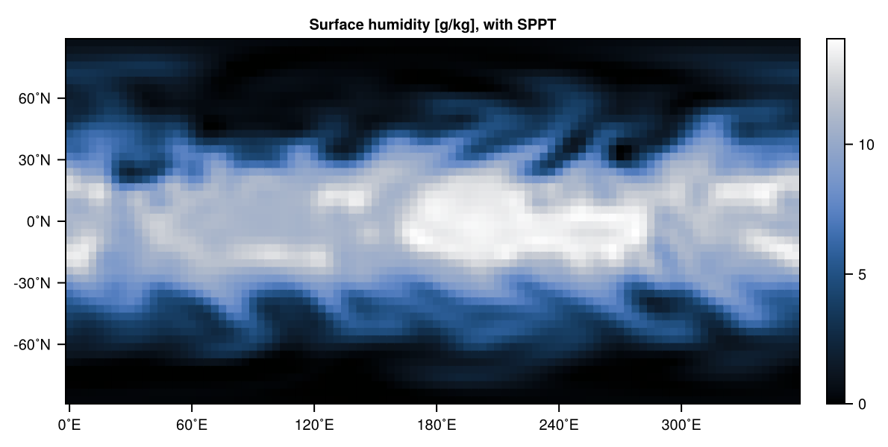
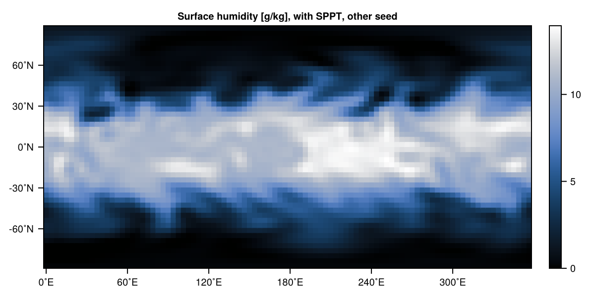

Stochastic physics
Stochastic physics introduces stochasticity into the parameterizations of physical process. There is conceptually several classes of how this can be done
- Stochastic perturbations of the tendencies
- Stochastic parameter perturbations
- Stochastic perturbations to the inputs of parameterizations
all of these use random numbers created from some random processes (white noise or with some autocorrelation in space or time or sampled from some other distribution) and are applied additive or multiplicative.
Stochastic physics implementations
Currently implemented is
using SpeedyWeather
subtypes(SpeedyWeather.AbstractStochasticPhysics)2-element Vector{Any}:
NoStochasticPhysics
StochasticallyPerturbedParameterizationTendenciesStochastically perturbed parameterization tendencies (SPPT)
SPPT is based on the idea that the dynamics $D$ have a higher certainty but that the Parameterizations $P$ are more uncertain and hence any stochasticity should scale with the size of the tendencies coming from the parameterizations. Conceptually an atmospheric state $\mathbf{x}$ is integrated in time $t$ as
\[\frac{\partial \mathbf{x}}{\partial t} = D(\mathbf{x}) + P(\mathbf{x}, t; p)\]
with the parameterizations being a function of the atmospheric state (column only for the single column parameterizations in SpeedyWeather), time $t$ and parameters $p$. Now SPPT changes this to
\[\frac{\partial \mathbf{x}}{\partial t} = D(\mathbf{x}) + (1+r)P(\mathbf{x}, t; p)\]
with $r \in [-1, 1]$ being a random value changing with time and space but not in the vertical (but you could define some tapering). The idea to constrain $r \in [-1, 1]$ is such that
- the sign up the tendencies $P$ is never reversed
- the tendencies $P$ are at most 2x larger after perturbation
So the stochasticity is multiplicative, in regions/times when the parameterizations are small, so is the perturbation, but with larger tendencies form parameterizations the perturbation is also stronger; satisfying the conceptual idea of uncertainty from the parameterizations scaling with the size of those.
You can use SPPT as follows. Start by defining a random_process, this controls how the random values $r$ are created
using SpeedyWeather
spectral_grid = SpectralGrid()
random_process = SpectralAR1Process(spectral_grid)SpectralAR1Process{Float32, Vector{Float32}} <: SpeedyWeather.AbstractRandomProcess
├ trunc::Int64 = 31
├ time_scale::Second = 21600 seconds
├ wavenumber::Int64 = 12
├ standard_deviation::Float32 = 0.33333334
├ clamp::Tuple{Float32, Float32} = (-1.0f0, 1.0f0)
├ seed::Int64 = 0
├ random_number_generator::Random.Xoshiro = Random.Xoshiro(0xdb2fa90498613fdf, 0x48d73dc42d195740, 0x8c49bc52dc8a77ea, 0x1911b814c02405e8, 0x22a21880af5dc689)
├ autoregressive_factor::Base.RefValue{Float32} = Base.RefValue{Float32}(0.0f0)
└── arrays: noise_factorsand you could change the length scale via wavenumber the time_scale or set a seed for reproducibility. seed=0 (default) means that a random seed is taken from Julia's global random number generator. Now we define SPPT as
stochastic_physics = StochasticallyPerturbedParameterizationTendencies(spectral_grid)StochasticallyPerturbedParameterizationTendencies{Float32, Vector{Float32}} <: SpeedyWeather.AbstractStochasticPhysics
├ nlayers::Int64 = 8
├ tapering::SpeedyWeather.var"#301#305" = #301
└── arrays: tapertapering (by default an anonymous function hence it looks like var"#269#273" = #269 as the compiler assigns a "name") can be used to change vertically the amplitude of r, e.g tapering = σ -> σ < 0.8 ? 1 : 1 - (σ - 0.8)/0.2 (in Sigma coordinates) could be passed on a (keyword) arugment to reduce the SPPT perturbation towards the surface. A tapering $\tau(\sigma)$ is applied like $(1 + \tau r)$, where $r = r(\lambda, \varphi, t)$ is a function of horizontal coordinates longitude $\lambda$, latitude $\varphi$ and time $t$ only.
Now we pass these on to the model constructor and run a simulation
model = PrimitiveWetModel(spectral_grid; random_process, stochastic_physics)
simulation = initialize!(model)
run!(simulation, period=Day(10))
# surface humidity, kg/kg -> g/kg
k = spectral_grid.nlayers # surface layer
humid = simulation.diagnostic_variables.grid.humid_grid[:, k]*1000
using CairoMakie
heatmap(humid, title="Surface humidity [g/kg], with SPPT", colormap=:oslo)
if we now run the same simulation again (but with a different seed for the random process, that's randomly drawn at initialize!)
simulation = initialize!(model)
run!(simulation, period=Day(10))
# surface humidity, kg/kg -> g/kg
humid = simulation.diagnostic_variables.grid.humid_grid[:, k]*1000
heatmap(humid, title="Surface humidity [g/kg], with SPPT, other seed", colormap=:oslo)